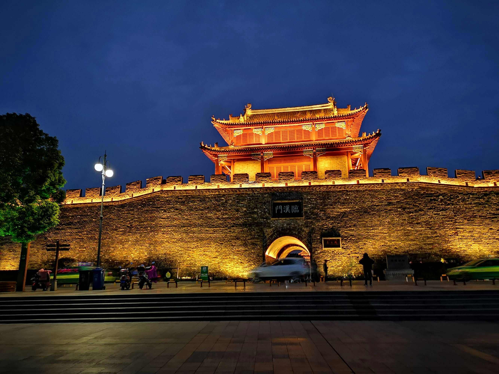
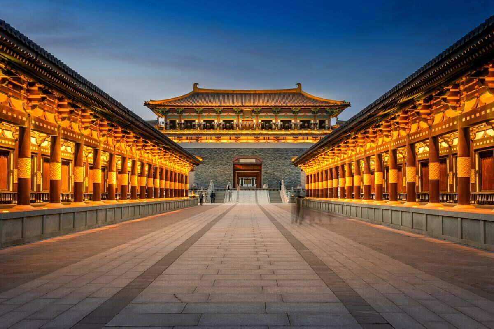
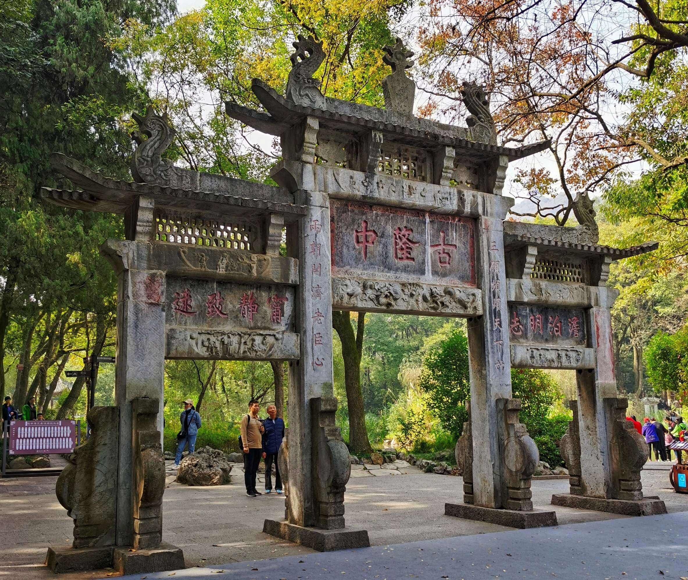

| 首页 | 家乡山水 | 作品展示 | 我的爱好 | 青春寄语 |
襄阳古城 襄阳古城位于湖北省襄阳市，地处汉水中游南岸，襄阳古城约始筑于西汉高帝六年，三面环水，一面靠山，易守难攻。雄据汉水中游，历史久远。
|
 |
|  | 唐城 襄阳唐城影视基地，又名中国唐城、襄阳影视城，位于湖北省襄阳市，是以影视拍摄服务为主，兼具观光旅游、文化娱乐、休闲度假等功能的大型综合性旅游区，兴建于2012年。 |
古隆中 隆中风景名胜区位于中国历史文化名城湖北省襄阳市，距襄阳城约13公里，总面积209平方公里。晋永兴年间至今，已有一千七百多年历史。包括古隆中、水镜庄、承恩寺、七里山、鹤子川等五大景区。因诸葛亮“躬耕陇亩”刘备“三顾茅庐”引发《隆中对策》被世人称为智者摇篮，三分天下的策源地。 |
 |